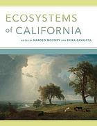

| Climate Zone 9b | Climate Zone 10a | Climate Zone 10b | |
|---|---|---|---|
| Lowest Frost Temperature | 25°F to 30°F | 30°F to 35°F | 35°F to 40°F |
| Helpful Databases | |||
| Useful Webposts |
| Further Reading on California Climate Zones | ||||||
|---|---|---|---|---|---|---|
| Title | Author | Publisher | Edition/Format | Link | Summary | |
| Ecosystems of California | Harold A. Mooney and Erika Zavaleta | Oakland, California: University of California Press, 2016 | Print book: English | Mooney and Zavaleta WorldCat Link | A reference and sourcebook for California's ecological abundance. This book provides an integrated assessment of each major ecosystem type -- its distribution, structure, function, and management. | |
| History of Plant Hadiness Zone Maps - The Rest of the Story | Tony Avent | Plantdelights.com, 2007 | Web Post | Plant Delights Article | An article on the history and usefullness of Plant Hardiness Zone Maps | |